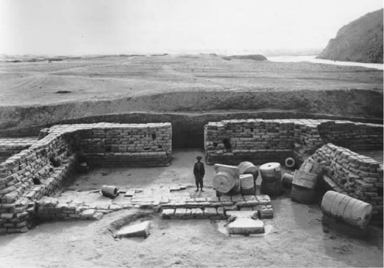
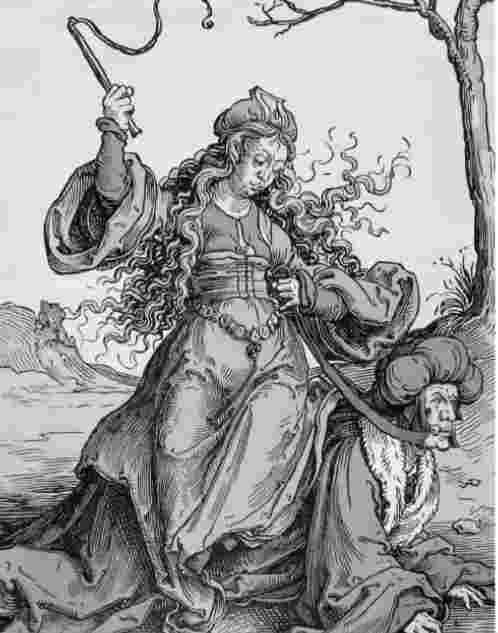

在亚里士多德死后，他的朋友和学生泰奥弗拉斯多继承了他的衣钵；在后者的带领下，吕克昂依然是科学和哲学研究的一个中心。但到了公元前3世纪，亚里士多德学派逐渐暗淡下来。其他思想流派——斯多葛学派、伊壁鸠鲁学派、怀疑论学派——主导了哲学的舞台，各门学科也都脱离哲学而独立发展，成为专门学者的研究领域。
不过，亚里士多德从未被人们忘记过，他的著作不止一次地复兴。从公元1世纪到6世纪，一系列学术评论家保存其著作、重振其思想。对亚里士多德的再次关注是在公元8世纪的拜占庭城。后来，到了公元12世纪，亚里士多德著作传到西欧，有学识的人得以阅读，并将其翻译成拉丁文，译本得到广泛传播、广泛阅读。亚里士多德被权威地尊称为“哲学家”。他的思想全面扩散开来，教会有意无意地想对其作品加以抑制，然而这种努力只不过巩固了这些作品的权威地位。亚里士多德的哲学和亚里士多德的科学几乎毫不动摇地统治西欧大约四个世纪。
要叙述亚里士多德死后的思想影响几乎就等于要描述欧洲的思想史。部分地说，他的影响根本而直接：亚里士多德的许多学说和信念被作为既定真理来传播；他的观点或对观点的思考在哲学家和科学家、历史学家和神学家、诗人和剧作家的作品里随处可见。但这种影响还有更细微之处。亚里士多德思想的内容和结构都给后代留下深刻的印象。吕克昂里所使用的概念和术语提供了哲学和科学赖以发展的媒介，所以，即使那些决心反驳亚里士多德的激进思想家，最后也发现自己在用亚里士多德的语言进行反驳。当我们今天谈论物质和形式、种和属、能量和潜能、实体和质量、偶然性和本质时，我们就不经意地在说亚里士多德的哲学语言，在使用两千年前希腊所形成的术语和概念进行思考。
值得补充的是，现代所说的科学方法的概念完全是亚里士多德式的。科学经验主义——抽象论证必须服从于事实根据、理论要经过严格的观察后方能定论好坏——现在看起来是一种常识了；但是过去可不是这样，主要是因为亚里士多德我们才把科学理解为一种经验追求。即便只是因为亚里士多德最著名的英国评论家弗朗西斯·培根和约翰·洛克都是坚定的经验主义者，并自认为自己的经验主义摆脱了亚里士多德的传统，我们就需要强调这一点。有人指责亚里士多德，说他更喜欢的是浅薄的理论和贫瘠的三段论演绎法，而不喜欢坚实的、丰富的事实数据。这样的指责令人不可容忍；它们来自那些没有足够仔细阅读亚里士多德本人著作的人，这些人把亚里士多德的继承者所犯的错误归咎到他本人身上来批评他。
亚里士多德影响巨大。但影响和伟大之处不是一回事，我们也许仍然要问是什么使得亚里士多德成为一位大师——正如但丁称呼他的，“是那些有知识的人的老师”——而且为何他现在仍然值得我们读呢？他最伟大的单个成就当然是生物学。通过那些记载在《动物研究》、《动物结构》和《动物的生殖》中的研究工作，他创立了生物学，并把它建立在可靠的经验基础和哲学基础之上；他所赋予该学科的结构轮廓一直保留到19世纪才被打破。仅次于生物学的是他的逻辑学。亚里士多德在这方面也创立了一门新学科，亚里士多德的逻辑学直到上世纪 [1] 末一直充当着欧洲思想中的逻辑学。只有极少数人创立了一门学科；而除了亚里士多德，还没有人创立过两门学科。

图22位于阿富汗阿伊·哈努姆的健身室。该城由亚历山大大帝麾下士兵所建，亚里士多德的学生克利尔库斯曾到此。本书102页插图中的抽象碎片正是在此健身室附近发现的。
不过，亚里士多德的生物学和逻辑学现在都已过时了。如果想学生物学或逻辑学，我们不会再去学亚里士多德的专题论著：它们现在只具有历史价值了。亚里士多德那些哲学味更浓厚的作品却不是这样。《物理学》、《形而上学》和《伦理学》中的文章还没有他的逻辑学和生物学那么可信、那么完善、那么科学；不过吊诡的是，它们却更有生命力。因为，在这方面亚里士多德仍然无人能及。比如，《伦理学》当然能作为历史文献来阅读——作为公元前4世纪实践哲学发展状态的证据来阅读。但它又可作为对当代辩论，甚至所有时代的辩论的一种贡献来阅读。当今的哲学家就是以这种方式来阅读亚里士多德的，他们把他看做一个杰出的同事。
最后一点，亚里士多德在他的著作里明确地、同时在他的生活里也隐约地向我们树立了一个优秀之人的典范。亚里士多德所设想的优秀之人也许不是唯一的典范或独一无二的理想模型；但他无疑是一个值得赞美的典型，要效仿他可是个不小的志向。我以《动物结构》里的一篇短文来结束本书，这段文字表述了亚里士多德所设想的优秀之人的一些最优秀之处。

图23亚里士多德与赫尔匹里斯，根据中世纪一部普通的幻想小说绘制。